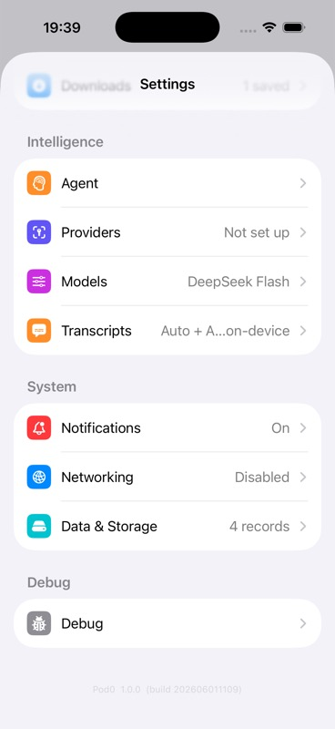
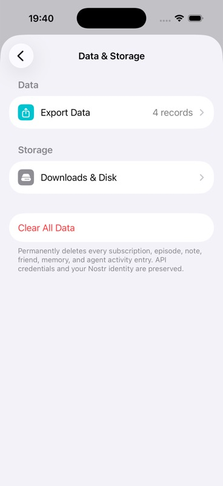
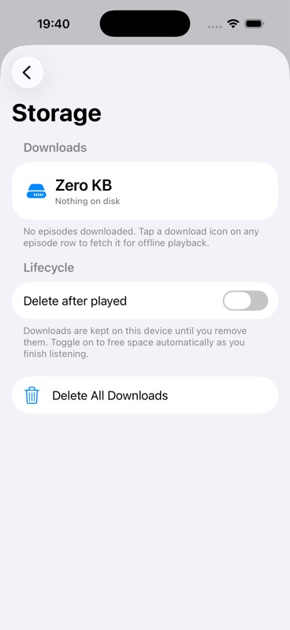
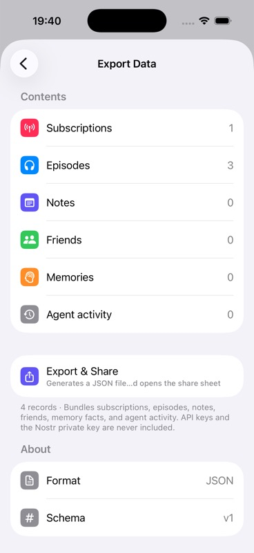

{kind=link}
{kind=link}
{kind=link}
{kind=link}
Persona, Job, And Acceptance Criteria
Persona: A new or returning podcast listener completing a core Pod0 job on iPhone. Acceptance criteria are the scenario Given/When/Then plus the declared architecture boundary D5.
Evidence refs: catalog:set-005
Pod0 Validation
Settings And Storage - fail
| Step | Phase | Action | Expected | Status | Evidence Needed |
|---|---|---|---|---|---|
| step-01-preconditions | Preconditions | Prepare storage screen opens | Fixture, device, provider, account, cassette, and network state match the scenario setup. | not_run | source_doc, command_output |
| step-02-action | Primary Action | Execute downloads exist | The user-visible route follows the intended path without hidden state mutation. | not_run | screenshot, ui_tree, log |
| step-03-result | Expected Result | Observe that storage breakdown shows audio, transcripts, cache, and total values | Observed UI, logs, metrics, and state projections agree with the expected behavior. | not_run | accessibility_audit, command_output, log, metric_trace, screenshot, source_doc, ui_tree |
| step-04-exit | Exit State | Leave the flow through the natural product path | Adjacent screens, back stack, mini-player, account, transcript, agent, or library state remain coherent. | not_run | screenshot, ui_tree |
Declared setup dependencies: storage seed. Provider mode is none until validation attaches fixtures or cassettes.
| Name | OS | Form Factor | UDID |
|---|---|---|---|
| iPhone 17 | iOS 26.2 | iphone | B4E1F31A-044B-4860-860B-C325BE5CC36E |
No cassettes declared for this scaffold.
Re-run I4 after fixing #717; destructive Clear All Data remains a deliberate teardown branch.
| Attempt | Status | Executor | Tools | Commands | Notes |
|---|---|---|---|---|---|
| attempt-001 | fail | Codex via XcodeBuildMCP | mcp__xcode.tap, mcp__xcode.swipe, mcp__xcode.snapshot_ui, mcp__xcode.screenshot | build_run_sim extraArgs=-skipPackagePluginValidation launchArgs=--UITestSeed | Downloads manager reports one saved 240 KB episode, but Downloads & Disk reports Zero KB and Nothing on disk. Export Data shows 4 records and JSON schema v1. |
SET-005 fails because Downloads reports one saved 240 KB episode while Downloads & Disk reports Zero KB and Nothing on disk in the same seeded run.





Screenshots and UI-tree excerpts contain seeded public podcast/settings data only. No API keys or private keys are exposed.
Required evidence kinds: source_doc, screenshot, ui_tree, log, metric_trace, accessibility_audit
| Kind | Reason | Blocked Dimensions |
|---|---|---|
| clear-all-data-teardown | Destructive Clear All Data branch was intentionally skipped. | offline_resume_behavior, privacy_security |
| accessibility_audit | VoiceOver, Dynamic Type, and contrast were not audited. | accessibility_dynamic_type, touch_ergonomics |
| ID | Type | Path | Description |
|---|---|---|---|
| catalog:set-005 | source_doc | sources/catalog/04-nostr-settings-platform-regression.md | Catalog source row for SET-005 at line 53. |
| rubric:review-skill-grounding | source_doc | data/skill-grounding.json | Required review skills and skill-search terms for scenario critique. |
| i4-screenshot-downloads-list | screenshot | assets/scenarios/i4-storage-downloads-settings/20260705T194050Z-downloads-list.jpg | Downloads manager showing one saved downloaded episode at 240 KB. |
| i4-screenshot-settings-system-row | screenshot | assets/scenarios/i4-storage-downloads-settings/20260705T194100Z-settings-system-row.jpg | Settings lower section with Data & Storage row showing 4 records. |
| i4-screenshot-data-storage-main | screenshot | assets/scenarios/i4-storage-downloads-settings/20260705T194110Z-data-storage-main.jpg | Data & Storage main screen with Export Data, Downloads & Disk, and Clear All Data. |
| i4-screenshot-storage-detail-zero-kb | screenshot | assets/scenarios/i4-storage-downloads-settings/20260705T194120Z-storage-detail-zero-kb.jpg | Downloads & Disk detail incorrectly showing Zero KB and Nothing on disk. |
| i4-screenshot-export-data | screenshot | assets/scenarios/i4-storage-downloads-settings/20260705T194130Z-export-data.jpg | Export Data detail showing 4 records and JSON schema v1. |
| i4-ui-tree | ui_tree | assets/scenarios/i4-storage-downloads-settings/20260705T194130Z-ui-tree-excerpt.json | XcodeBuildMCP semantic UI-tree excerpts for Downloads, Data & Storage, disk detail, and export. |
| pod0-local-run-log | log | assets/scenarios/shared/20260705T193205Z-run-log-references.json | Shared build, runtime, simulator, and command log references for the local evidence run. |
| Area | Status | Summary | Checks | Gaps |
|---|---|---|---|---|
| accessibility | incomplete | VoiceOver, Dynamic Type, contrast, Reduce Motion, Reduce Transparency, 44 pt targets, captions, and assistive navigation. Current scaffold has no run evidence for SET-005. | VoiceOver labels, Dynamic Type, 4.5:1 contrast, 44 pt targets, Reduce Motion/Transparency | Attach accessibility evidence before scoring this area above 2. |
| content_localization | incomplete | Podcast metadata, transcript/agent copy, truncation, empty copy, locale/date/number behavior, and translation safety. Current scaffold has no run evidence for SET-005. | copy clarity, long text, dates/numbers/locale, empty/error copy, transcript readability | Attach content localization evidence before scoring this area above 2. |
| controls_gestures | incomplete | Buttons, menus, sheets, gestures, audio route controls, haptics, keyboard alternatives, and touch reach. Current scaffold has no run evidence for SET-005. | touch reach, gesture alternative, audio controls, haptic expectation, sheet/menu behavior | Attach controls gestures evidence before scoring this area above 2. |
| observability | incomplete | Structured logs, metric IDs, provider/request IDs, relay IDs, redacted traces, and issue reproduction context. Current scaffold has no run evidence for SET-005. | metric IDs, request IDs, relay IDs, redacted traces, issue reproduction context | Attach observability evidence before scoring this area above 2. |
| offline_resume | incomplete | Offline state, app relaunch, background playback, interrupted provider calls, downloads, and resume from stale state. Current scaffold has no run evidence for SET-005. | offline messaging, resume after relaunch, background playback, download availability, cancel/retry | Attach offline resume evidence before scoring this area above 2. |
| performance | pass_with_issues | Node-count metrics are captured for all I4 screens; no Instruments trace is attached. | screen responsiveness, snapshot node count | No Instruments trace. |
| privacy_security | pass_with_issues | Export and clear-data copy state credential/private-key boundaries. Clear All Data was not executed. | secret exclusion copy, destructive-action copy, redaction | Destructive teardown branch skipped. |
| reliability | incomplete | Rerun count, flake history, retry behavior, stale evidence, timeout behavior, and deterministic replay. Current scaffold has no run evidence for SET-005. | rerun count, retry cause, flake history, fresh build, deterministic replay | Attach reliability evidence before scoring this area above 2. |
| ui | pass_with_issues | The settings surfaces are legible and use native controls; the storage detail content is wrong. | layout, visual hierarchy, destructive action clarity | Revalidate after #717. |
| ux | fail | Users see one saved download, then a Zero KB disk report. This breaks the disk-management task. | task clarity, data consistency, recovery trust | Fix and revalidate #717. |
| Metric | Value | Budget | Status | Method |
|---|---|---|---|---|
| Downloads manager saved download size | 240 KB | Should match or be accounted for by storage detail | pass | Downloads UI tree text |
| Downloads & Disk reported storage | 0 KB | Should account for saved downloaded episode bytes | fail | Storage detail UI tree text |
| Export Data visible record count | 4 records | Visible count should match category breakdown | pass | Export Data UI tree text |
Local UI-tree node counts were collected for Downloads (183), Data & Storage (171), Storage detail (174), and Export Data (213).
Not assessed. Record transition, haptic, and Reduce Motion behavior when motion is part of the flow.
Not assessed. Review must check buttons, menus, sheets, gestures, audio route controls, haptics, keyboard alternatives, and one-handed reach.
| Dimension | Score | Status | Rationale |
|---|---|---|---|
| functional_correctness | 1 | fail | Core storage summary acceptance fails. |
| evidence_reproducibility | 4 | pass | Current screenshots, UI tree, metrics, issue link, and log references are attached. |
| product_experience | 2 | pass_with_issues | The UI is coherent, but contradictory storage numbers hurt trust. |
| engineering_quality | 1 | fail | Storage accounting is inconsistent between two app surfaces. |
| follow_through | 3 | pass_with_issues | A GitHub issue is filed; revalidation remains open. |
Ship gate: blocked
| Gate | Status | Requirement | Owner |
|---|---|---|---|
| required_evidence | pass_with_issues | Screenshots/UI trees/logs/cassettes/metrics required by the scenario are attached and redacted. | validation-agent |
| skill_grounding | pass | UI, UX, accessibility, performance, and product judgments cite the loaded review skills or local doctrine. | validation-agent |
| score_integrity | pass_with_issues | Every dimension and group score follows the evidence gates and matches the final verdict. | validation-agent |
| product_coherence | incomplete | Individual scenario judgment and related-scenario group judgment are both present. | validation-agent |
| defect_tracking | pass_with_issues | Every actionable defect has severity, owner, GitHub issue link, and fix/revalidation state. | validation-agent |
| release_readiness | blocked | No blocker or major unresolved risk remains without an explicit owner and acceptance rationale. | validation-agent |
| Gap | Severity | Summary | Affected Dimensions | Owner |
|---|---|---|---|---|
| i4-storage-accounting-defect | major | Downloads & Disk reports Zero KB while Downloads reports one saved 240 KB episode. | actual_result, ux_polish, verdict | app-team |
| i4-clear-all-data-skipped | minor | Destructive Clear All Data teardown branch was skipped. | privacy_security, offline_resume_behavior | validation-agent |
| Gap | Severity | Summary | Affected Dimensions | Owner |
|---|---|---|---|---|
| i4-storage-accounting-defect | major | Downloads & Disk reports Zero KB while Downloads reports one saved 240 KB episode. | actual_result, ux_polish, verdict | app-team |
| i4-clear-all-data-skipped | minor | Destructive Clear All Data teardown branch was skipped. | privacy_security, offline_resume_behavior | validation-agent |
| ID | Severity | Priority | Risk | Dimensions | Mitigation |
|---|---|---|---|---|---|
| risk-i4-storage-trust | major | p0 | Users cannot trust disk usage or cleanup if downloads and storage disagree. | actual_result, ux_polish, verdict | Fix #717 and re-run I4 with the same seeded downloaded episode. |
| Issue | Severity | Title | Status |
|---|---|---|---|
| #717 | major | I4/SET-005: Downloads & Disk reports Zero KB while Downloads shows a saved 240 KB episode | open |
| Dimension | Score | Status | Rationale |
|---|---|---|---|
| functional_correctness | 1 | fail | Core storage summary acceptance fails. |
| evidence_reproducibility | 4 | pass | Current screenshots, UI tree, metrics, issue link, and log references are attached. |
| product_experience | 2 | pass_with_issues | The UI is coherent, but contradictory storage numbers hurt trust. |
| engineering_quality | 1 | fail | Storage accounting is inconsistent between two app surfaces. |
| follow_through | 3 | pass_with_issues | A GitHub issue is filed; revalidation remains open. |
| Dimension | Score | Status | Rationale |
|---|---|---|---|
| persona_acceptance | 0 | incomplete | Persona, Job, And Acceptance Criteria has not been validated with current run evidence. |
| flow | 0 | incomplete | Flow has not been validated with current run evidence. |
| attempted_test | 4 | pass | A current simulator run exercised downloads, data/storage, disk detail, and export paths. |
| scenario_setup | 0 | incomplete | Scenario Setup has not been validated with current run evidence. |
| execution_attempts | 0 | incomplete | Execution Attempts, Retries, And Branches has not been validated with current run evidence. |
| expected_behavior | 0 | incomplete | Expected Behavior has not been validated with current run evidence. |
| actual_result | 1 | fail | Storage detail contradicts the downloads manager in the same run. |
| artifacts | 4 | pass | Screenshots, UI tree, metrics, log references, and issue link are attached. |
| evidence_provenance | 0 | incomplete | Evidence Provenance has not been validated with current run evidence. |
| review_skill_grounding | 0 | incomplete | Review Skill Grounding has not been validated with current run evidence. |
| ui_polish | 3 | pass_with_issues | The screens are readable and stable; the failure is data inconsistency. |
| ux_polish | 1 | fail | Conflicting storage numbers make disk management untrustworthy. |
| performance | 3 | pass_with_issues | Node-count metrics are attached; no Instruments trace is attached. |
| accessibility_dynamic_type | 0 | incomplete | Accessibility And Dynamic Type has not been validated with current run evidence. |
| liquid_glass_ios_primitives | 0 | incomplete | Liquid Glass And iOS Primitives has not been validated with current run evidence. |
| error_recovery | 0 | incomplete | Error And Recovery Behavior has not been validated with current run evidence. |
| privacy_security | 3 | pass_with_issues | Export and clear-data copy make credential/private-key boundaries explicit; destructive teardown was not run. |
| nmp_architecture | 0 | incomplete | NMP Architecture And Cohesiveness has not been validated with current run evidence. |
| product_coherence | 0 | incomplete | Product Coherence In Context has not been validated with current run evidence. |
| product_cluster_coherence | 0 | incomplete | Product Cluster Coherence has not been validated with current run evidence. |
| before_after_deltas | 0 | incomplete | Before/After Deltas has not been validated with current run evidence. |
| reliability_flakiness | 0 | incomplete | Reliability And Flakiness has not been validated with current run evidence. |
| regression_risk | 0 | incomplete | Regression Risk has not been validated with current run evidence. |
| defects_issues_filed | 4 | pass | The real defect is filed as #717 with current evidence references. |
| revalidation_status | 0 | incomplete | Revalidation Status has not been validated with current run evidence. |
| risks_follow_up | 0 | incomplete | Risks, Follow-Up, And Back-Links has not been validated with current run evidence. |
| instrumentation_gaps | 0 | incomplete | Instrumentation Gaps And Missing Evidence has not been validated with current run evidence. |
| localization_content_quality | 0 | incomplete | Localization And Content Quality has not been validated with current run evidence. |
| controls_gestures_audio | 0 | incomplete | Controls, Gestures, Audio, And Haptics has not been validated with current run evidence. |
| offline_resume_behavior | 0 | incomplete | Offline, Interruption, And Resume Behavior has not been validated with current run evidence. |
| readiness_gates | 0 | incomplete | Readiness Gates has not been validated with current run evidence. |
| verdict | 1 | fail | SET-005 fails until #717 is resolved and revalidated. |
| next_actions | 0 | incomplete | Next Actions has not been validated with current run evidence. |
| owner_status | 0 | incomplete | Owner And Status has not been validated with current run evidence. |
| cross_screen_continuity | 0 | incomplete | Cross-Screen Continuity has not been validated with current run evidence. |
| states_resilience | 0 | incomplete | Empty, Loading, Offline, And Recovery States has not been validated with current run evidence. |
| touch_ergonomics | 0 | incomplete | Touch Ergonomics has not been validated with current run evidence. |
| motion_haptics | 0 | incomplete | Motion And Haptics has not been validated with current run evidence. |
| information_architecture | 0 | incomplete | Information Architecture has not been validated with current run evidence. |
| content_hierarchy | 0 | incomplete | Content Hierarchy has not been validated with current run evidence. |
| observability | 0 | incomplete | Observability has not been validated with current run evidence. |
| analytics_privacy_boundaries | 0 | incomplete | Analytics And Privacy Boundaries has not been validated with current run evidence. |
| replayability_cassette_provenance | 0 | incomplete | Replayability And Cassette Provenance has not been validated with current run evidence. |
| evidence_confidence | 0 | incomplete | Evidence Confidence has not been validated with current run evidence. |
| device_os_matrix | 0 | incomplete | Device And OS Matrix has not been validated with current run evidence. |
| sister_app_nmp_chirp_comparison | 0 | incomplete | Sister App, NMP, And Chirp Comparison has not been validated with current run evidence. |
Persona: A new or returning podcast listener completing a core Pod0 job on iPhone. Acceptance criteria are the scenario Given/When/Then plus the declared architecture boundary D5.
Evidence refs: catalog:set-005
Catalog flow for Settings And Storage: Given storage screen opens, when downloads exist, then storage breakdown shows audio, transcripts, cache, and total values.
Evidence refs: catalog:set-005
Executed SET-005 locally with XcodeBuildMCP using --UITestSeed. Captured Downloads manager, Data & Storage main, Downloads & Disk, and Export Data.
Evidence refs: i4-screenshot-downloads-list, i4-screenshot-data-storage-main, i4-screenshot-storage-detail-zero-kb, i4-screenshot-export-data, i4-ui-tree, pod0-local-run-log
Declared setup dependencies: storage seed. Provider mode is none until validation attaches fixtures or cassettes.
Evidence refs: catalog:set-005
No attempts, retries, or branch executions have run. The page reserves structured attempt records for manual, simulator, CI, and replay executions.
Evidence refs: catalog:set-005
Expected behavior from BDD: storage breakdown shows audio, transcripts, cache, and total values. NMP/RMP boundary declared by the catalog: D5.
Evidence refs: catalog:set-005
Downloads manager shows one saved downloaded episode at 240 KB. Downloads & Disk reports Zero KB and Nothing on disk. Export Data shows 4 records with JSON schema v1.
Evidence refs: i4-screenshot-downloads-list, i4-screenshot-storage-detail-zero-kb, i4-screenshot-export-data, i4-ui-tree
Attached five current screenshots, a semantic UI-tree excerpt, and shared log references.
Evidence refs: i4-screenshot-downloads-list, i4-screenshot-settings-system-row, i4-screenshot-data-storage-main, i4-screenshot-storage-detail-zero-kb, i4-screenshot-export-data, i4-ui-tree, pod0-local-run-log
8 non-catalog artifact(s) are attached with their published IDs, paths, redaction metadata, and run context.
Evidence refs: i4-screenshot-data-storage-main, i4-screenshot-downloads-list, i4-screenshot-export-data, i4-screenshot-settings-system-row, i4-screenshot-storage-detail-zero-kb, i4-ui-tree, pod0-local-run-log, rubric:review-skill-grounding
Review must be grounded in loaded skills, not generic taste. Selected grounding covers Liquid Glass/iOS primitives, generated-site accessibility and interaction guidelines, and Playwright-based page verification.
Evidence refs: rubric:review-skill-grounding
Downloads, Data & Storage, and Export Data screens are readable and native; the failing state is data consistency, not visual layout.
Evidence refs: i4-screenshot-downloads-list, i4-screenshot-data-storage-main, i4-screenshot-export-data
Storage accounting contradiction breaks user trust in cleanup and disk usage. Export copy correctly excludes API and private keys.
Evidence refs: i4-screenshot-storage-detail-zero-kb, i4-screenshot-export-data
Local UI-tree node counts were collected for Downloads (183), Data & Storage (171), Storage detail (174), and Export Data (213).
Evidence refs: i4-ui-tree
Not assessed. Requires VoiceOver/UI tree labels, Dynamic Type, contrast, Reduce Motion/Transparency, and touch target evidence.
Evidence refs: rubric:review-skill-grounding
Not assessed. Requires evidence that iOS primitives and glass-like materials are used as functional chrome, with accessibility fallbacks.
Evidence refs: rubric:review-skill-grounding
Not assessed. Error, offline, retry, cancellation, and recovery paths must be captured where the scenario can fail.
Evidence refs: catalog:set-005
Export Data copy states API keys and the Nostr private key are never included; Clear All Data copy states credentials and identity are preserved.
Evidence refs: i4-screenshot-data-storage-main, i4-screenshot-export-data
Not assessed. Declared NMP/RMP boundary: D5. Review must check Rust-owned state/policy, thin native renderers, bounded FFI, replay clocks, and privacy fail-closed behavior.
Evidence refs: catalog:set-005, rubric:review-skill-grounding
SET-005 has current run evidence and currently fails its scenario-level product job; linked defects and revalidation remain required.
Evidence refs: i4-screenshot-data-storage-main, i4-screenshot-downloads-list, i4-screenshot-export-data, i4-screenshot-settings-system-row, i4-screenshot-storage-detail-zero-kb, i4-ui-tree, pod0-local-run-log, rubric:review-skill-grounding
Settings And Storage cluster coherence remains incomplete until adjacent scenarios are judged together; SET-005 now contributes current evidence and linked defects to that group view.
Evidence refs: i4-screenshot-data-storage-main, i4-screenshot-downloads-list, i4-screenshot-export-data, i4-screenshot-settings-system-row, i4-screenshot-storage-detail-zero-kb, i4-ui-tree, pod0-local-run-log, rubric:review-skill-grounding
Current evidence must be read as before/action/after deltas across the flow steps; any missing pair remains listed in instrumentation gaps.
Evidence refs: i4-screenshot-data-storage-main, i4-screenshot-downloads-list, i4-screenshot-export-data, i4-screenshot-settings-system-row, i4-screenshot-storage-detail-zero-kb, i4-ui-tree, pod0-local-run-log, rubric:review-skill-grounding
Not assessed. Validation must record rerun count, retry causes, flake history, stale-build risk, timeout behavior, and deterministic replay coverage.
Evidence refs: catalog:set-005
Not assessed. Validation must list adjacent scenarios and modules to rerun after any fix.
Evidence refs: catalog:set-005
Filed #717 for the Downloads & Disk storage mismatch.
Evidence refs: i4-ui-tree
0 fixed issue(s) and 1 open issue(s) are linked; fixed issues require revalidation run IDs before closure is considered proven.
Evidence refs: i4-screenshot-data-storage-main, i4-screenshot-downloads-list, i4-screenshot-export-data, i4-screenshot-settings-system-row, i4-screenshot-storage-detail-zero-kb, i4-ui-tree, pod0-local-run-log, rubric:review-skill-grounding
Current risks are scaffolded from missing evidence and cluster regression exposure. Actionable defects must gain issue/PR links and revalidation run IDs.
Evidence refs: catalog:set-005
Screenshots, UI trees, logs, metrics, cassettes, and accessibility audits are listed as explicit missing evidence so gaps cannot be hidden in prose.
Evidence refs: catalog:set-005, rubric:review-skill-grounding
Not assessed. Review must check locale-sensitive strings, podcast metadata, transcript/agent content, truncation, empty/error copy, and translation safety.
Evidence refs: rubric:review-skill-grounding
Not assessed. Review must check buttons, menus, sheets, gestures, audio route controls, haptics, keyboard alternatives, and one-handed reach.
Evidence refs: rubric:review-skill-grounding
Not assessed. Offline, interruption, relaunch, background playback, cancellation, retry, and resume behavior must be captured where applicable.
Evidence refs: catalog:set-005
Ship gate is blocked; gates now reflect attached evidence, remaining missing evidence, linked defects, and cluster-level follow-up.
Evidence refs: i4-screenshot-data-storage-main, i4-screenshot-downloads-list, i4-screenshot-export-data, i4-screenshot-settings-system-row, i4-screenshot-storage-detail-zero-kb, i4-ui-tree, pod0-local-run-log, rubric:review-skill-grounding
Evidence-backed fail for SET-005 due to storage accounting mismatch. Clear All Data teardown remains intentionally unrun.
Evidence refs: i4-screenshot-downloads-list, i4-screenshot-storage-detail-zero-kb, i4-ui-tree
Run the scenario, attach evidence, score every dimension, file defects, and republish this page from validated JSON.
Evidence refs: catalog:set-005
Readiness gates, instrumentation gaps, risks, issues, and next actions carry owner/status fields for follow-through.
Evidence refs: i4-screenshot-data-storage-main, i4-screenshot-downloads-list, i4-screenshot-export-data, i4-screenshot-settings-system-row, i4-screenshot-storage-detail-zero-kb, i4-ui-tree, pod0-local-run-log, rubric:review-skill-grounding
Not assessed. Capture before/after navigation state for adjacent surfaces and ensure mini-player, queue, transcript, agent, and settings remain coherent.
Evidence refs: catalog:set-005
Not assessed. Capture empty, loading, denied, unavailable, offline, retry, and recovery states reached by this scenario.
Evidence refs: catalog:set-005
Not assessed. Audit primary controls for reachability, 44x44 pt targets, spacing, and gesture alternatives.
Evidence refs: rubric:review-skill-grounding
Not assessed. Record transition, haptic, and Reduce Motion behavior when motion is part of the flow.
Evidence refs: rubric:review-skill-grounding
Not assessed. Confirm the user knows location, current mode, and next action from titles, tabs, bars, breadcrumbs, and hierarchy.
Evidence refs: rubric:review-skill-grounding
Not assessed. Verify podcast/show/episode/transcript/agent content outranks chrome and does not truncate critical meaning.
Evidence refs: rubric:review-skill-grounding
Not assessed. Attach structured logs, metric IDs, provider/request IDs, relay IDs, and redacted traces needed to diagnose failures.
Evidence refs: catalog:set-005
Not assessed. Confirm useful event boundaries without PII, private keys, raw transcripts/audio, or provider secrets.
Evidence refs: catalog:set-005
Not assessed. Declared dependencies: storage seed. Provider, relay, STT, TTS, LLM, and network behavior must use replay cassettes or explain live-only evidence.
Evidence refs: catalog:set-005
Evidence confidence is zero until a current build, device/OS, rerun count, freshness, and flake notes are attached.
Evidence refs: catalog:set-005
No device/OS matrix has run. The first validation should record simulator/device, OS, locale, appearance, Dynamic Type, and network state.
Evidence refs: catalog:set-005
Not assessed. Review must compare applicable NMP doctrine and known Chirp/sister-app fixes before marking this flow cohesive.
Evidence refs: rubric:review-skill-grounding